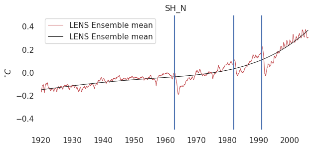

Imports#
import pathlib
import numpy as np
import xarray as xr
import cartopy.crs as ccrs
import matplotlib.pyplot as plt
import matplotlib.dates as mdates
import datetime
import seaborn as sns
import cmocean
import matplotlib.patches as mpatches
import matplotlib.ticker as mticker
import scipy.signal
import copy
import pandas as pd
import os
## (optional) remove gridlines from plots
sns.set(rc={"axes.facecolor": "white", "axes.grid": False})
Helper fns#
def plot_setup(fig, projection, lon_range, lat_range, xticks=None, yticks=None):
"""Add a subplot to the figure with the given map projection
and lon/lat range. Returns an Axes object."""
## increase resolution for projection
## (otherwise lines plotted on surface won't follow curved trajectories)
projection.threshold /= 1000
## Create subplot with given projection
ax = fig.add_subplot(projection=projection)
## Subset to given region
extent = [*lon_range, *lat_range]
ax.set_extent(extent, crs=ccrs.PlateCarree())
## draw coastlines
ax.coastlines(linewidths=0.5)
## add tick labels
if xticks is not None:
## add lon/lat labels
gl = ax.gridlines(
draw_labels=True,
linestyle="-",
alpha=0.1,
linewidth=0.5,
color="k",
zorder=1.05,
)
## specify which axes to label
gl.top_labels = False
gl.right_labels = False
## specify ticks
gl.ylocator = mticker.FixedLocator(yticks)
gl.xlocator = mticker.FixedLocator(xticks)
return ax
def plot_box_outline(ax, lon_range, lat_range, c="k"):
"""
Plot box outlining the specifed lon/lat range on given
ax object.
"""
## get width and height
height = lat_range[1] - lat_range[0]
width = lon_range[1] - lon_range[0]
## add rectangle to plot
ax.add_patch(
mpatches.Rectangle(
xy=[lon_range[0], lat_range[0]],
height=height,
width=width,
transform=ccrs.PlateCarree(),
facecolor="none",
edgecolor=c,
linewidth=1,
)
)
return ax
def plot_correlation(plot_setup_fn, corr, x, y):
"""
Make spatial plot of correlation, using the specified
plot setup function and pre-computed correlation.
Args:
- plot_setup_fn: function that returns a fig, ax object
- corr: xarray with spatial correlation
- x, y: lon/lat points for plotting
"""
## blank canvas to plot on
fig = plt.figure()
## draw background map of Atlantic
fig, ax = plot_setup_fn(fig)
## plot the data
plot_data = ax.contourf(
x,
y,
corr,
transform=ccrs.PlateCarree(),
levels=make_cb_range(1, 0.1),
extend="both",
cmap="cmo.balance",
)
## create colorbath
colorbar = fig.colorbar(plot_data, label="Corr.", ticks=[-1, -0.5, 0, 0.5, 1])
return fig, ax
def plot_setup_pacific(fig):
"""Plot Atlantic region"""
## adjust figure size
fig.set_size_inches(5, 3)
## specify map projection
proj = ccrs.PlateCarree(central_longitude=-160)
## get ax object
ax = plot_setup(
fig,
proj,
lon_range=[100, 300],
lat_range=[-30, 30],
xticks=[150, -160, -110],
yticks=[-20, 0, 20],
)
return fig, ax
def make_cb_range(amp, delta):
"""Make colorbar_range for cmo.balance
Args:
- 'amp': amplitude of maximum value for colorbar
- 'delta': increment for colorbar
"""
return np.concatenate(
[np.arange(-amp, 0, delta), np.arange(delta, amp + delta, delta)]
)
def plot_setup_timeseries():
"""
Create fig, ax objects and label time axis
"""
## set up plot
fig, ax = plt.subplots(figsize=(4, 3))
## restrict to last 50 years and label axes
ax.set_xlim([datetime.date(1970, 1, 1), None])
ax.set_xticks(
[
datetime.date(1979, 1, 1),
datetime.date(2000, 6, 30),
datetime.date(2021, 12, 31),
]
)
ax.xaxis.set_major_formatter(mdates.DateFormatter("%Y"))
return fig, ax
def plot_seasonal_cycle(mean, std):
"""
Plot the seasonal cycle (monthly mean ± 1 standard dev.)
"""
## plot
fig, ax = plt.subplots(figsize=(4, 3))
## mean
ax.plot(np.arange(1, 13), mean, c="k", label=r"$\mu$")
## mean ± std
ax.plot(np.arange(1, 13), mean + std, c="k", lw=0.5, label=r"$\mu \pm \sigma$")
ax.plot(np.arange(1, 13), mean - std, c="k", lw=0.5)
## label
ax.legend()
return fig, ax
def spatial_avg(data):
"""function to compute spatial average of data on grid with constant
longitude/latitude spacing."""
## first, compute cosine of latitude (after converting degrees to radians)
latitude_radians = np.deg2rad(data.latitude)
cos_lat = np.cos(latitude_radians)
## get weighted average using xarray
avg = data.weighted(weights=cos_lat).mean(["longitude", "latitude"])
return avg
def get_trend_coefs(data, dim="time", deg=1):
"""get coefficients for trend"""
return data.polyfit(dim=dim, deg=deg)["polyfit_coefficients"]
def get_trend(data, deg=1):
"""
Get trend for an xr.dataarray along specified dimension,\n",
by fitting polynomial of degree 'deg'
"""
## get \"time index\", used to avoid numerical issues when curve fitting\n",
data = data.assign_coords(time_idx=("time", np.arange(len(data.time))))
## Get coefficients for best fit
polyfit_coefs = get_trend_coefs(data=data, dim="time_idx", deg=deg)
## Get best fit line (linear trend in this case)\n",
trend = xr.polyval(data["time_idx"], polyfit_coefs)
return trend.drop_vars("time_idx")
def detrend(data, dim="time", deg=1):
"""
Remove trend of degree 'deg' from data, along dimension 'dim'.
"""
return data - get_trend(data, dim=dim, deg=deg)
def get_empirical_pdf(x, bin_edges=None):
"""
Estimate the "empirical" probability distribution function for the data x.
In this case the result is a normalized histogram,
Normalized means that integrating over the histogram yields 1.
Returns the PDF (normalized histogram) and edges of the histogram bins
"""
## compute histogram
if bin_edges is None:
hist, bin_edges = np.histogram(x)
else:
hist, _ = np.histogram(x, bins=bin_edges)
## normalize to a probability distribution (PDF)
bin_width = bin_edges[1:] - bin_edges[:-1]
pdf = hist / (hist * bin_width).sum()
return pdf, bin_edges
def get_gaussian_best_fit(x):
"""Get gaussian best fit to data, and evaluate
probabilities over the range of the data."""
## get normal distribution best fit
gaussian = scipy.stats.norm(loc=x.mean(), scale=x.std())
## evaluate over range of data
amp = np.max(np.abs(x.values))
x_eval = np.linspace(-amp, amp)
pdf_eval = gaussian.pdf(x_eval)
return pdf_eval, x_eval
def swap_longitude_range(data):
"""swap longitude range of xr.DataArray from [0,360) to (-180, 180]"""
## copy of longitude coordinate to be modified
new_longitude = copy.deepcopy(data.lon.values)
## find index where longitude first exceeds 180.
## (note: np.argmax returns first instance of "True" in boolean array)
swap_idx = np.argmax(new_longitude > 180)
## relabel values >180
new_longitude[swap_idx:] = -360 + new_longitude[swap_idx:]
## add this coordinate back to the array
data["lon"] = new_longitude
## "roll" the data to be centered at zero
data = data.roll({"lon": -swap_idx}, roll_coords=True)
return data
def get_autocorr_helper(x, lag, month=None):
"""Get autocorrelation of data for single lag"""
## return 1 for a lag of 0
if lag == 0:
return 1.0
## get lagged version of x
elif lag > 0:
x_lagged = x.isel(time=slice(lag, None))
x_ = x.isel(time=slice(None, -lag))
else:
x_lagged = x.isel(time=slice(None, lag))
x_ = x.isel(time=slice(-lag, None))
## re-label time axis so arrays match
x_lagged["time"] = x_.time
## subset for data from given month
if month is not None:
is_month = x_.time.dt.month == month
x_ = x_.isel(time=is_month)
x_lagged = x_lagged.isel(time=is_month)
return get_corr_coef(x_, x_lagged).item()
def get_autocorr(x, lags, month=None):
"""Get autocorrelation for data for multiple lags"""
## put autocorrelation for each lag in array
autocorr = [get_autocorr_helper(x, lag, month) for lag in lags]
## convert to xr.DataArray
return xr.DataArray(autocorr, coords={"lag": lags})
def get_autocorr_by_month(x, lags):
"""Get autocorrelation for each month, and stack in array"""
## compute autocorrelation for each month
autocorr = [get_autocorr(x, lags, month=m) for m in np.arange(1, 13)]
## convert to xarray
return xr.concat(autocorr, dim=pd.Index(np.arange(1, 13), name="month"))
def load_simulation(varname, member_id, simulation_type, preprocess_func=None, use_jetstream=False):
"""
Load dataset for single simulation, for single variable.
Arguments:
- varname: name of variable to load, one of {"SST","PSL"}
- member_id: ID of ensemble member to load, an integer in the range [1,10]
- simulation_type: one of {"hist", "rcp85"}
- preprocess func: optional preprocessing function to apply to the simulation
Returns:
- xarray dataarray with given data
"""
## Filepath to the CESM LENS dataset
if use_jetstream:
lens_fp = pathlib.Path("jetstream/climate/data1/yokwon/CESM1_LE/downloaded/ocn/proc/tseries/monthly")
else:
lens_fp = pathlib.Path("cmip6/data/cmip6/CMIP/NCAR/LENS")
#### 1. get filepath to data
data_fp = SERVER_FP / lens_fp / pathlib.Path(varname)
#### 2. get naming pattern for files to open
if simulation_type == "hist":
if use_jetstream:
file_pattern = f"*B20TRC5CNBDRD*g16.{member_id:03d}*.nc"
else:
file_pattern = f"*20TRC*.{member_id:03d}.*.nc"
elif simulation_type == "rcp85":
file_pattern = f"*RCP85*.{member_id:03d}.*.nc"
else:
print("Not a valid simulation type")
#### 3. open the relevant datasets, applying preprocessing function
data = xr.open_mfdataset(
paths=data_fp.glob(file_pattern),
preprocess=preprocess_func,
chunks={"time": 60},
)
return data[[varname,"TAREA"]].squeeze(drop=True)
def load_ensemble_helper(varname, simulation_type, preprocess_func=None):
"""
Load all ensemble members for given simulation type and variable.
Arguments:
- varname: name of variable to load, one of {"SST","PSL"}
- simulation_type: one of {"hist", "rcp85"}
- preprocess func: optional preprocessing function to apply to the simulation
Returns:
- xarray dataarray with given data and 'ensemble' dimension
"""
## put arguments in dictionary
kwargs = dict(
varname=varname,
simulation_type=simulation_type,
preprocess_func=preprocess_func,
)
## put results in list
member_ids = np.concatenate([np.arange(1,36), np.arange(101,108)])
data = [load_simulation(member_id=i, **kwargs) for i in member_ids]
## concatenate data along the "ensemble" dimension
ensemble_dim = pd.Index(np.arange(1, 43), name="member")
data = xr.concat(data, dim=ensemble_dim)
return data
def load_ensemble(varname, simulation_type, lat_range, preprocess_func=None, save_fp=None):
"""
Load all ensemble members for given simulation type and variable.
(Checks if data exists locally first).
Arguments:
- varname: name of variable to load, one of {"SST","PSL"}
- simulation_type: one of {"hist", "rcp85"}
- preprocess func: optional preprocessing function to apply to the simulation
- save_fp: pathlib.Path object (save the result here if specified)
Returns:
- xarray dataarray with given data and 'ensemble' dimension
"""
## define preprocessing function which trims to specified latitude range
preprocess_func_helper = lambda data : preprocess_func(data, lat_range=lat_range)
## put arguments in dictionary
kwargs = dict(
varname=varname,
simulation_type=simulation_type,
preprocess_func=preprocess_func_helper,
)
## load pre-computed data if it exists
if save_fp is not None:
## path to file
save_fp = save_fp / f"{varname}_{simulation_type}_{lat_range[0]}_to_{lat_range[1]}.nc"
## check if file exists:
if save_fp.is_file():
data = xr.open_dataset(save_fp)
else:
## load the data and save to file for next time
data = load_ensemble_helper(**kwargs)
print("saving to file")
data.to_netcdf(save_fp)
else:
## don't load/save the data
data = load_ensemble_helper(**kwargs)
return data
def preprocess(data, lat_range):
"""
Preprocessing steps:
1. remove data before Feb 1920
2. trim in lon/lat space
3. convert time dimension from cftime to datetime
Note: assumes varname is "SST"!
"""
## trim in time
data_ = data.sel(time=slice("1920-02", None))
## trim in space
data_ = trim(data_, lat_range=lat_range)
## update time dimension
start_year = data_.time.isel(time=0).dt.year.item()
start_month = data_.time.isel(time=0).dt.month.item()
start_date = f"{start_year}-{start_month}-01"
data_["time"] = pd.date_range(start=start_date, periods=len(data_.time), freq="MS")
## compute spatial average (weighted by grid cell area)
data_["SST"] = data_["SST"].weighted(data_["TAREA"]).mean(["nlat","nlon"])
return data_
def swap_longitude_range_TLONG(data):
"""swap longitude range of xr.DataArray from [0,360) to (-180, 180].
Handles case with 2-dimension longitude coordinates ('TLONG')"""
## make copy of longitude coordinate to be modified
TLONG_new = copy.deepcopy(data.TLONG.values)
## relabel values greater than 180
exceeds_180 = TLONG_new > 180
TLONG_new[exceeds_180] = -360 + TLONG_new[exceeds_180]
## Update the coordinate on the xarray object
data["TLONG"].values = TLONG_new
## next, transpose data so that longitude is last dimension
## (we'll do all the sorting along this dimension)
data = data.transpose(..., "nlon")
## Get indices needed to sort longitude to be monotonic increasing
TLONG_sort_idx = np.argsort(data["TLONG"].values, axis=-1)
## sort the lon/lat coordindates
sort = lambda X, idx: np.take_along_axis(X.values, indices=idx, axis=-1)
data["TLONG"].values = sort(data["TLONG"], idx=TLONG_sort_idx)
data["TLAT"].values = sort(data["TLAT"], idx=TLONG_sort_idx)
#### sort the SST data
# first, check to see if data has more than two dimensions
if data.ndim > 2:
extra_dims = [i for i in range(data.ndim - 2)]
TLONG_sort_idx = np.expand_dims(TLONG_sort_idx, axis=extra_dims)
## now, do the actual sorting
data.values = sort(data, idx=TLONG_sort_idx)
return data
def trim(data, lat_range, lon_range=[0,360]):
"""select part of data in given longitude/latitude range"""
## check if data is on the "T"-grid
on_Tgrid = "TLONG" in data.coords
## handle trimming for T-grid
if on_Tgrid:
## helper function to check if 'x' is in 'x_range'
isin_range = lambda x, x_range: (x_range[0] <= x) & (x <= x_range[1])
## get mask for data in given lon/lat range
in_lon_range = isin_range(data['TLONG'],lon_range)
in_lat_range = isin_range(data["TLAT"], lat_range)
in_lonlat_range = in_lon_range & in_lat_range
## load to memory
in_lonlat_range.load()
## Retain all points with at least one valid grid cell
x_idx = in_lonlat_range.any("nlat")
y_idx = in_lonlat_range.any("nlon")
## select given points
return data.isel(nlon=x_idx, nlat=y_idx)
else:
return data.sel(lon=slice(*lon_range), lat=slice(*lat_range))
Load, trim, save data#
## Path to file server
SERVER_FP = pathlib.Path("/vortexfs1/share")
## Specify folder location for saving trimmed data ("./" means current directory)
save_fp = pathlib.Path("./")
## Load data
#this is janky because all these data products have different lat ranges; load one at a time and change trim
## specify arguments common to all datasets
kwargs = dict(varname="SST", simulation_type="hist", save_fp=save_fp, preprocess_func=preprocess)
## Load the data
lens_SH_S = load_ensemble(lat_range=[-90,-45], **kwargs)
lens_SH_N = load_ensemble(lat_range=[-45,0], **kwargs)
lens_NH_S = load_ensemble(lat_range=[0,45], **kwargs)
lens_NH_N = load_ensemble(lat_range=[45,90], **kwargs)
lens_EQ = load_ensemble(lat_range=[-30,30], **kwargs)
lens_EQ2 = load_ensemble(lat_range=[-15,15], **kwargs)
## Merge into single xr.Dataset
lens = xr.merge(
[
lens_SH_S["SST"].rename("SH_S"),
lens_SH_N["SST"].rename("SH_N"),
lens_NH_S["SST"].rename("NH_S"),
lens_NH_N["SST"].rename("NH_N"),
lens_EQ["SST"].rename("EQ"),
lens_EQ2["SST"].rename("EQ2"),
]
)
## load into memory
lens.load();
---------------------------------------------------------------------------
OSError Traceback (most recent call last)
Cell In[6], line 9
6 kwargs = dict(varname="SST", simulation_type="hist", save_fp=save_fp, preprocess_func=preprocess)
8 ## Load the data
----> 9 lens_SH_S = load_ensemble(lat_range=[-90,-45], **kwargs)
10 lens_SH_N = load_ensemble(lat_range=[-45,0], **kwargs)
11 lens_NH_S = load_ensemble(lat_range=[0,45], **kwargs)
Cell In[2], line 442, in load_ensemble(varname, simulation_type, lat_range, preprocess_func, save_fp)
437 data = xr.open_dataset(save_fp)
439 else:
440
441 ## load the data and save to file for next time
--> 442 data = load_ensemble_helper(**kwargs)
444 print("saving to file")
445 data.to_netcdf(save_fp)
Cell In[2], line 397, in load_ensemble_helper(varname, simulation_type, preprocess_func)
395 ## put results in list
396 member_ids = np.concatenate([np.arange(1,36), np.arange(101,108)])
--> 397 data = [load_simulation(member_id=i, **kwargs) for i in member_ids]
399 ## concatenate data along the "ensemble" dimension
400 ensemble_dim = pd.Index(np.arange(1, 43), name="member")
Cell In[2], line 397, in <listcomp>(.0)
395 ## put results in list
396 member_ids = np.concatenate([np.arange(1,36), np.arange(101,108)])
--> 397 data = [load_simulation(member_id=i, **kwargs) for i in member_ids]
399 ## concatenate data along the "ensemble" dimension
400 ensemble_dim = pd.Index(np.arange(1, 43), name="member")
Cell In[2], line 368, in load_simulation(varname, member_id, simulation_type, preprocess_func, use_jetstream)
365 print("Not a valid simulation type")
367 #### 3. open the relevant datasets, applying preprocessing function
--> 368 data = xr.open_mfdataset(
369 paths=data_fp.glob(file_pattern),
370 preprocess=preprocess_func,
371 chunks={"time": 60},
372 )
374 return data[[varname,"TAREA"]].squeeze(drop=True)
File ~/research/whoi-climate-tutorial_2025/envs/lib/python3.11/site-packages/xarray/backends/api.py:1597, in open_mfdataset(paths, chunks, concat_dim, compat, preprocess, engine, data_vars, coords, combine, parallel, join, attrs_file, combine_attrs, **kwargs)
1594 paths = _find_absolute_paths(paths, engine=engine, **kwargs)
1596 if not paths:
-> 1597 raise OSError("no files to open")
1599 paths1d: list[str | ReadBuffer]
1600 if combine == "nested":
OSError: no files to open
plot data sample#
def plot_setup_global(fig):
"""Plot Atlantic region"""
## adjust figure size
fig.set_size_inches(5, 3)
## specify map projection
proj = ccrs.PlateCarree(central_longitude=0)
## get ax object
ax = plot_setup(
fig,
proj,
lon_range=[-180, 180],
lat_range=[-90, 90],
xticks=[-200, -100, 0, 100, 200],
yticks=[-90, -45, 0, 45, 90],
)
return fig, ax
fig = plt.figure(figsize=(10, 3))
## make background of trop. Pacific
fig, ax = plot_setup_global(fig)
## plot the data
plot_data = ax.pcolormesh(
lens_SH_S.TLONG,
lens_SH_S.TLAT,
lens_SH_S.isel(member=0, time=0),
cmap="cmo.thermal",
#vmax=30,
#vmin=15,
transform=ccrs.PlateCarree(),
)
timeseries#
‘’’ In LENS, you could isolate the effect of external forcing by averaging over all ensemble members. After ensemble-averaging, you could remove a linear trend (implicitly representing non-volcanic external forcing) and the seasonal cycle; hopefully, the resulting anomalies are dominated by the volcanic forcing. So the resulting anomalies would be your “residual” timeseries, called R(t) in the paper. Once you have this R(t), you could try to reproduce some of the plots in the paper (e.g., their Figs 3a and 3b). ‘’’
## which index to look at
region = "SH_N"
## should we detrend?
remove_trend = False
#ensemble averaging
ensemble_mean = lens[region].mean(["member"])
#remove seasonal cycle
data_deseason = ensemble_mean.groupby("time.month") - ensemble_mean.groupby("time.month").mean()
# get polynomial trend
trend = get_trend(data_deseason, deg=4)
## specify which region to plot
## plot ensemble mean
fig, ax = plt.subplots(figsize=(7, 3))
## plot data
ax.plot(
lens.time,
data_deseason,
c="r",
lw=0.75,
zorder=2,
label="LENS Ensemble mean",
)
## plot trend
ax.plot(
lens.time,
trend,
c="k",
lw=0.75,
zorder=2,
label="LENS Ensemble mean",
)
## label
ax.set_ylabel(r"$^{\circ}C$")
ax.legend()
ax.set_title(region)
ax.set_xlim([datetime.datetime(1920, 1, 1), datetime.datetime(2006, 12, 31)])
## Add some markers
ax.axvline(datetime.datetime(1982,1,1))
ax.axvline(datetime.datetime(1963,1,1))
ax.axvline(datetime.datetime(1991,1,1))
ax.set_ylim([-.5,.5])
plt.show()
